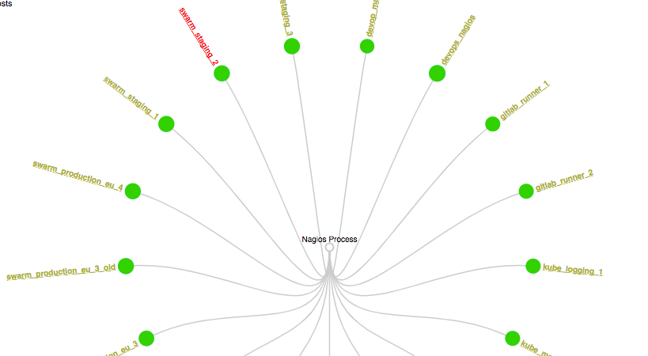

Nagios
A trustworthy
monitoring tool
Because stories starting
with "Service is down"
have awful endings...
Service is down because...
- the server disk was full!
- the service stopped!
- memory is drained!
- we were hacked because of outdated packages running!
What is Nagios
Nagios is a server monitoring infrastructure
- Configurable for multiple servers
- Independent from cluster
How does this work?
Each server runs nrpe, a nagios agent.
Nagios server sends checks to nrpe and handles the results.

Nagios entities
- Host - link
- Service - link
- Contact - link
- Plugins - link
- Addons like NRPE - execute Nagios plugins on remote Linux/Unix machines
Let's take look
in our dashboards